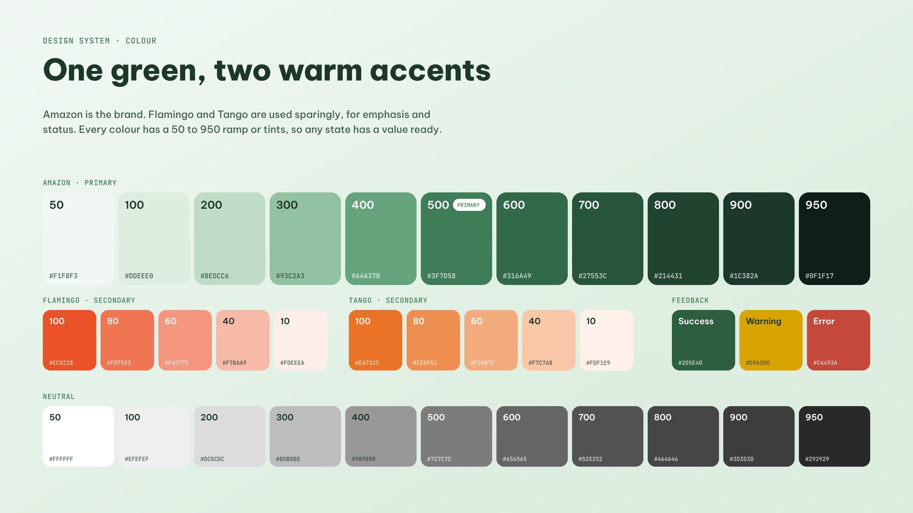
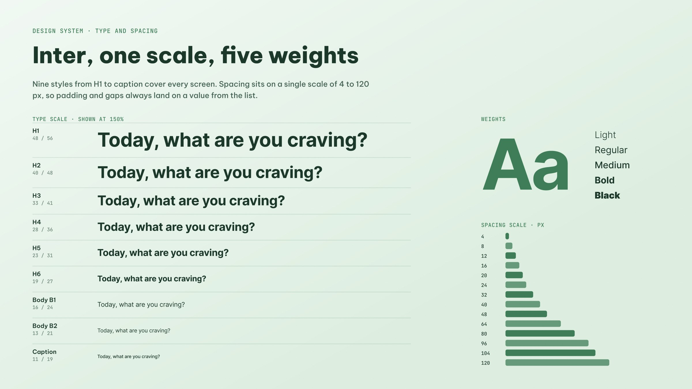
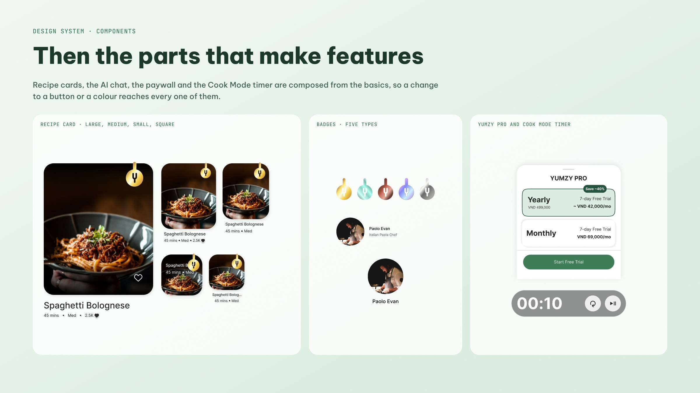
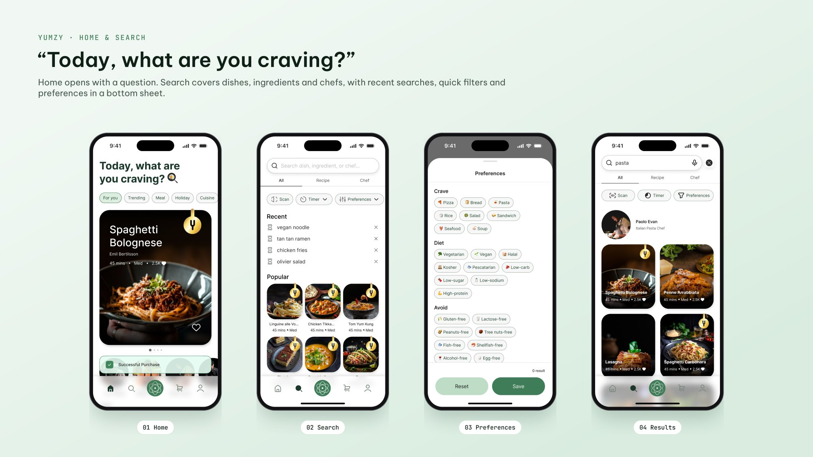
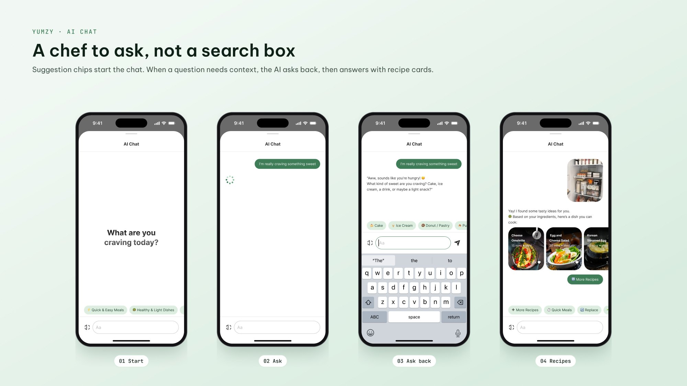
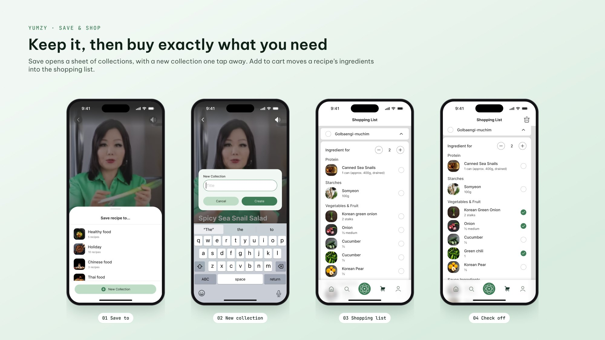
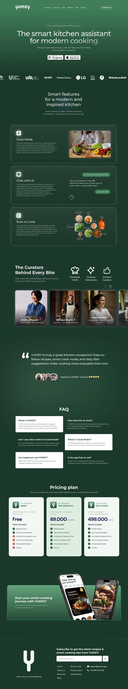
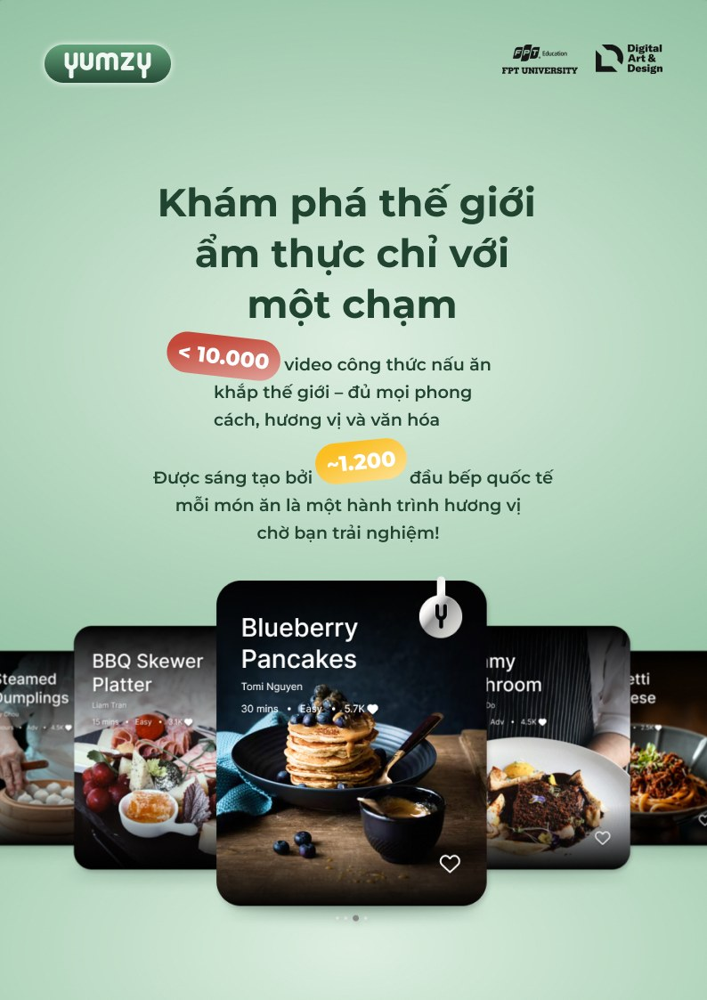

Một app nấu ăn trả lời câu hỏi mỗi ngày: hôm nay nấu gì, với những gì đang có trong bếp?
Tóm tắt trong 30 giây
Vấn đềNấu gì, và làm sao theo kịp
Người mới nấu ăn 20 – 35 tuổi khó chọn món, rồi khó làm theo công thức trong lúc nấu.
Đóng góp của mìnhResearch, UX writing, UI, strategy
Secondary research cho ba mục tiêu, persona, How might we, user flow, wireframe, prototype và UI. Quỳnh làm branding, marketing, report và flow onboarding.
Ý tưởng chínhBa tính năng AI cho ba khoảnh khắc trong hành trình nấu ăn
Scan khi chưa biết nấu gì, Chat AI khi cần gợi ý, Cook Mode khi đang nấu.
Kết quảBáo cáo cuối kỳ, tháng 5/2025
Prototype độ trung thực cao, landing page giới thiệu sản phẩm, TVC quảng bá và ấn phẩm tại buổi triển lãm tốt nghiệp của Đại học FPT. Chưa được kiểm thử với người dùng.
YUMZY trong 44 giây
Video giới thiệu app nhóm mình làm cho chiến dịch ra mắt (TVC ở mục 10). Video có tiếng.
01
Vấn đề và giả thuyết
Người mới vào bếp khó quyết định nấu gì, rồi lại khó làm theo công thức trong lúc nấu.
Người dùng mục tiêu của nhóm là người mới nấu ăn, 20 – 35 tuổi: một dải rộng người trẻ ở thành phố, được xác định từ secondary research, không phải từ phỏng vấn. Dải tuổi này gồm cả người trưởng thành thuộc Gen Z, nhóm được nhiều số liệu bên dưới nhắm tới. Khoảnh khắc khó nhất là phải chuyển qua lại giữa xem công thức và tự tay sơ chế, nấu.
Vấn đề
Nấu gì, và làm sao theo kịp
Người mới nấu ăn thường gặp hai khó khăn: chọn món từ nguyên liệu đang có, và làm theo hướng dẫn công thức trong lúc chuẩn bị món. Đây là hai vấn đề riêng, gặp nhau trong hành trình nấu ăn.
Giả thuyết
Ngắn, dọc, từng bước
Nếu hướng dẫn được trình bày bằng video dọc ngắn, đi từng bước, người mới sẽ tự tin hơn và nấu xong nhiều món hơn.
Mục tiêu research
Tìm đúng chỗ vướng
Tìm ra những khó khăn chính khi người mới tìm và làm theo công thức trên mạng, và video có thể giúp được gì.
Vì sao người ta muốn nấu ăn lại
Ở Việt Nam ăn ngoài rất dễ, nhưng ngày càng nhiều người tính toán chi tiêu hơn, và đa số vẫn muốn nấu. Đây là các số liệu công khai cùng chỉ về một hướng:
84%người tiêu dùng Việt đặt hạn mức chi cho ăn uống bên ngoài (Decision Lab, 2024)
49%Gen Z giữ chặt ngân sách, cao nhất trong các nhóm tuổi (Decision Lab, 2024)
44%dự định tự nấu từ nguyên liệu nhiều hơn, thêm 47% dự định giữ thói quen này (McKinsey, 2022)
Nguồn: Decision Lab, F&B Trends 2024; McKinsey & Company, 2022, qua Statista. Đây là các khảo sát khác nhau, năm khác nhau, nên xem như một hướng chung, không phải một đường xu hướng liền mạch.
Vậy khoảng trống không nằm ở chuyện muốn nấu hay không. Trong nghiên cứu của mình, rào cản là chọn nấu món gì, làm theo công thức, và bỏ dở giữa chừng. Euromonitor cũng ghi thiếu kỹ năng là lý do chính khiến Gen Z ở Việt Nam không nấu ăn tại nhà. Khoảng trống này định hướng sản phẩm cho YUMZY.
02
Research: ba câu hỏi
Video để có cảm hứng. Chữ để nấu.
Dự án dựa trên secondary research: bài viết, khảo sát, nền tảng và app đối thủ có sẵn. Không có phỏng vấn người dùng hay usability test, nên các kết quả dưới đây là giả thuyết có cơ sở nghiên cứu, chưa phải insight đã được xác thực trực tiếp. Mỗi mục tiêu nghiên cứu (RO) kết thúc bằng một danh sách insight chính.
RO1
Chọn món và quá trình nấu
- Người dùng thường không biết nấu gì, nhất là khi mệt, bận hoặc thiếu nguyên liệu.
- Chọn món gây mệt mỏi khi phải quyết định, khiến nấu ăn thành gánh nặng.
- Họ tìm công thức ở hai lúc: có kế hoạch (trước khi đi chợ, chuẩn bị cho tuần) và bất chợt (đói lúc tối, tủ lạnh trống).
- Bước quá mơ hồ hoặc quá chi tiết, thiếu khâu chuẩn bị dẫn đến sai, và có người bỏ dở giữa chừng, làm lần sau càng ngại nấu.
RO2
Tìm ở đâu, xem dạng gì
- Google và website trước; YouTube, TikTok đang tăng; app như Cooky, Tasty, Yummly giúp lên kế hoạch.
- TikTok để có cảm hứng nhanh, YouTube để học kỹ thuật, website và app để làm theo.
- Video để học, chữ để nấu: chữ đọc lướt nhanh hơn và không bị quảng cáo chen ngang.
- Ảnh đẹp tạo động lực. Người dùng cần đi liền mạch từ khám phá, đến chọn, đến nấu.
RO3
Chọn công thức theo tiêu chí gì
- Nhanh và dễ, ít nguyên liệu, rẻ, dễ mua.
- Tiêu chí hàng đầu: thời gian, độ khó, chi phí, sức khỏe, vị quen, khẩu phần.
- Ảnh, đánh giá và độ tin cậy ảnh hưởng nhiều; điểm và bình luận giúp bớt sợ nấu hỏng.
- Khẩu phần, gợi ý nguyên liệu thay thế và bước rõ ràng giúp nấu thành công và tự tin hơn.
Điều thay đổi sau researchGiả thuyết đúng một nửa. Video ngắn giúp chọn món và học kỹ thuật, nhưng khi đang nấu người dùng muốn một dòng chữ ngắn đọc lướt là hiểu. Vì vậy app dùng cả hai: video ngắn để khám phá món, còn trong Cook Mode mỗi bước là một câu hành động ngắn đặt trên video của bước đó.
Bằng chứng
RO1: các bước mơ hồ hoặc quá chi tiết và thiếu bước sơ chế dẫn đến sai sót, một số người bỏ dở giữa chừng. RO2: video để học, chữ để nấu, vì chữ đọc lướt nhanh hơn và không bị quảng cáo chen vào. Nguồn: secondary research, chưa test với người dùng.
Insight
Video ngắn giúp chọn món và học, nhưng khi đang nấu người ta cần một dòng chữ ngắn đọc lướt là hiểu.
Hệ quả cho thiết kế
Video ngắn để khám phá món. Trong Cook Mode, mỗi bước là một câu hành động ngắn đặt trên video.
03
Thiết kế cho ai
Người mới nấu ăn 20 – 35 tuổi ở thành phố, dùng điện thoại thành thạo và ít thời gian.
Nhân khẩu học20 – 35 tuổi
Mọi giới tính, thu nhập trung bình đến cao. Rộng có chủ ý, để bao gồm cả người trưởng thành thuộc Gen Z.
Địa lýThành thị
Cách dùng app thay đổi theo văn hóa ẩm thực và thói quen từng nơi.
Tâm lýBận, nhưng ưu tiên sức khỏe
Rành công nghệ; đã quen app theo dõi sức khỏe, lên thực đơn và chatbot AI.
Hành viMột trợ lý bếp thông minh
Tìm công thức, chia sẻ món, thích được AI và video hướng dẫn.
Hai proto-persona
Các proto-persona này được xây dựng từ secondary research và giả định, không phải từ phỏng vấn, nên hãy xem chúng là giả thuyết làm việc. Persona 1, Beginner Home Cook, là người dùng chính, mọi quyết định đều đưa ra cho người này. Persona 2, người mẹ nấu mỗi ngày, là người dùng phụ. Mình dùng chị để kiểm tra xem tính năng làm cho người mới có còn dùng tốt với người đã biết nấu không.
Persona 1
Beginner Home Cook
Người dùng chính của YUMZY
Không biết nấu gì, bị rối với công thức dài, và dễ bỏ cuộc khi một bước bị hỏng.
- Cần: gợi ý từ những gì có sẵn, mỗi lần một bước rõ ràng, và được hỗ trợ khi tay đang bận.
Persona 2 · Stay-at-home Mom
Trương Ngọc Linh, 30
Nội trợ và chủ kinh doanh nhỏ · TP.HCM
Nấu ba bữa mỗi ngày cho gia đình bốn người có hai con nhỏ, đặt nguyên liệu lúc sáng sớm hoặc đêm khuya.
- Khó khăn: vừa việc nhà, vừa con nhỏ, vừa kinh doanh.
- Cần: công thức gia đình cân bằng, đúng khẩu phần; mua đúng lượng.
04
Những gì đã có
Ai cũng có công thức và video. Chưa ai giúp ở khoảnh khắc “trong tủ lạnh có gì?”
Mình xem bốn nhóm: nền tảng video và ba app nấu ăn phổ biến. Với mỗi nhóm, mình ghi lại điều làm tốt, điều còn thiếu, và YUMZY nên học gì.
chọn một đối thủ
| Đối thủ | Điểm mạnh | Còn thiếu | YUMZY học gì |
|---|---|---|---|
| Nền tảng video | YouTube, TikTok: kho video lớn, tìm nhanh, nội dung gần gũi và truyền cảm hứng, nhiều ngôn ngữ. | Không có công cụ công thức hay nguyên liệu, không có lộ trình rõ, dễ bị cuốn đi, nội dung không phải lúc nào cũng đáng tin. | Giữ sức hút của video, nhưng đặt vào một lộ trình từng bước. |
| Kitchen Stories | Hướng dẫn từng bước bằng hình, Cooking Mode, công thức từ tủ lạnh, chỉnh khẩu phần và đơn vị. | Không quét nguyên liệu bằng ảnh hay giọng nói, không có AI hỗ trợ theo thời gian thực, ít ngôn ngữ. | Nấu từng bước là mức tối thiểu. Thêm scan bằng ảnh và AI trả lời ngay. |
| Tasty | Công thức miễn phí và đa dạng, video và Cook Mode, bộ lọc tìm kiếm thông minh, gợi ý cá nhân. | Không nhận diện nguyên liệu, ít tùy chỉnh khẩu phần, thiếu món vùng miền và truyền thống. | Gợi ý cá nhân cộng với nhận diện nguyên liệu, có chỗ cho món địa phương. |
| Crème | Video từng bước, trợ lý Sous AI (gói trả phí), tự tạo danh sách mua sắm, giao diện đẹp. | Ít ngôn ngữ, ít món địa phương, không nhập bằng ảnh hay giọng nói. | Đưa AI vào luồng chính, nhập bằng ảnh và giọng nói, và giữ danh sách mua sắm. |
Khoảng trốngTrong bốn nhóm mình so sánh, chưa nhóm nào vừa nhận diện nguyên liệu từ ảnh, vừa có trợ lý AI trả lời ngay, vừa hỗ trợ giọng nói và món địa phương. Đó là cơ hội YUMZY được thiết kế xoay quanh. Đây là giả thuyết, chưa phải lợi thế đã được kiểm chứng.
05
Từ insight đến ý tưởng: How might we
Mỗi tính năng trong app bắt đầu từ một câu hỏi.
Mình chuyển các insight thành câu hỏi How might we, chia theo ba chặng của hành trình, và gắn mỗi câu với một ý tưởng cụ thể.
Chọn món và chuẩn bị
Chọn đúng món, có đủ nguyên liệu
- HMW giúp người dùng chọn món từ nguyên liệu đang có?
→ Gợi ý món từ nguyên liệu người dùng đưa vào (Scan, Chat AI). - HMW cho biết món có hợp khẩu vị không?
→ Ghi rõ từng nguyên liệu và lượng cần dùng. - HMW giúp chuẩn bị trước khi bắt đầu?
→ Checklist nguyên liệu cần chuẩn bị, kèm video ngắn hướng dẫn sơ chế. - HMW giúp lên danh sách đi chợ từ món đã chọn?
→ Add to grocery list, tự nhóm theo khu: rau, thịt, đồ khô.
Trong lúc nấu
Hướng dẫn dễ theo
- HMW viết bước rõ ràng, không dài dòng hay mơ hồ?
→ Mỗi lần một bước: một hành động kèm một hình ảnh cụ thể. - HMW giúp biết đang ở bước nào?
→ Cooking Mode: mỗi bước toàn màn hình có nút Tiếp theo, kèm thanh tiến trình. - HMW giúp nấu tiếp khi khóa máy hay thoát app?
→ Lưu bước đang làm và hỏi “Tiếp tục nấu không?” khi mở lại. - HMW giúp dùng công thức khi tay đang bận?
→ Điều khiển bằng giọng nói.
Nền tảng và định dạng
Lấy điểm mạnh của TikTok, YouTube và web
- HMW kết hợp điểm mạnh của TikTok, YouTube và website?
→ Video ngắn giới thiệu món, bấm vào để xem chi tiết, video công thức đầy đủ khi nấu. - HMW phục vụ cả người thích đọc lẫn người thích xem?
→ Công thức đổi được định dạng: video kèm chữ, hoặc chỉ chữ.
06
Ba tính năng AI, ba khoảnh khắc
Mỗi tính năng trả lời một khoảnh khắc trong bếp, không phải thêm tính năng cho đủ.
Các ý tưởng How might we gom lại thành ba tính năng AI, mỗi cái cho một chặng của hành trình, cộng thêm một danh sách mua sắm (không dùng AI):
“Có cái này thì nấu gì?”Scan
Chụp ảnh nguyên liệu; AI nhận diện rồi gợi ý công thức.
“Không biết ăn gì”Chat AI
Gợi ý theo khẩu vị, nguyên liệu đang có và mục tiêu ăn uống.
“Tay đang bận”Cook Mode
Hướng dẫn từng bước với video, hẹn giờ và giọng nói, từ đầu đến cuối.
“Mua thừa, bỏ phí”Danh sách mua
Thêm nguyên liệu của công thức và mua đúng lượng để tiết kiệm, ít lãng phí.
07
Design system
Một lưới, một bộ chữ, một bộ component cho mọi màn hình.
Nhóm đặt nền tảng trước khi vẽ màn hình, để hai người vẽ song song mà giao diện vẫn đồng bộ.
Lưới393 × 852
4 cột 80 px, lề 20 px, khoảng cách cột 16 px. Status bar 59 px, home indicator 21 px.
ChữInter
Chín style từ H1 48/56 đến caption 11/19, năm độ đậm từ Light đến Black.
Khoảng cách4 → 120 px
Một thang khoảng cách cho padding và gap.
MàuAmazon
Một màu xanh cho thương hiệu, Flamingo và Tango làm điểm nhấn, thêm màu trạng thái và dải trung tính.



Component, từ phần nhỏ đến tính năng
Nút, ô nhập, chip, tag và toggle làm trước. Card công thức, card đầu bếp, tìm kiếm, bộ lọc, hồ sơ và màn YUMZY PRO được ghép từ chúng, và các phần của tính năng cũng vậy: nút chụp khi scan, bottom sheet, ô chat AI và đồng hồ hẹn giờ của Cook Mode.


08
Cấu trúc và user flow
Năm mục chính, và đường nào cũng dẫn về một công thức.
Search có bốn lối vào: thanh tìm kiếm, bộ lọc, gợi ý và Scan. Tất cả dẫn về cùng một trang kết quả và cùng một trang chi tiết, nên người dùng chỉ cần học một cách đi. Mỗi flow cũng có đường lùi khi có sự cố: chụp ảnh khác, đổi từ khóa hay bộ lọc, hoặc hỏi AI.
Sitemap
Từ Home đi đến năm mục chính. Chi tiết công thức là nơi mọi đường đi về.
- Home
- Tất cả công thức
- Tag danh mục
- Mọi đường đều về đâyChi tiết công thức
- Tìm kiếm
- Bộ lọc
- → Kết quả tìm kiếm
- Gợi ý cho bạn
- → Kết quả tìm kiếm
- ScanAI đọc nguyên liệu từ ảnh
- → Kết quả tìm kiếm
- Thanh tìm kiếm
- Kết quả tìm kiếm
- → Chi tiết công thức
- Danh sách mua
- Tất cả món cần mua
- Chat AI
- Công thức trong câu trả lời
- → Chi tiết công thức
- Hồ sơ
- Đã lưu, Theo dõi, Lịch sử, Cài đặt
Chạm để mở sơ đồ đầy đủ
User flow: Scan
Chụp hoặc chọn ảnh. Nếu AI nhận ra nguyên liệu, người dùng kiểm tra tag và Confirm, rồi app chuyển sang AI Chat với các công thức phù hợp. Nếu không, thử lại.
- Tìm kiếmBấm Scan
- Chụp hay chọn ảnh?
- Thư việnThư viện ảnhChọn một ảnh
- → Analyzing image, rồi Detecting ingredient
- Thư viện
- CameraCameraChụp nguyên liệuKhung ngắm: giữ máy thật vững
- Đang phân tíchAnalyzing image, rồi Detecting ingredient
- Nhận ra nguyên liệu?
- KhôngKhông nhận ra nguyên liệuThử lại với ảnh khác
- Thử lại→ Bấm Scan
- Không
- CóKiểm tra tag trên ảnhMỗi nguyên liệu có nhãn. Sửa danh sách, Retry hoặc Confirm
- ConfirmAI ChatCông thức phù hợpApp tự chuyển sang AI Chat với nguyên liệu đã điền sẵn
- Chọn một công thức
- XongChi tiết công thức
Scan trả lời câu hỏi "có gì trong bếp thì nấu được gì?"
Chạm để mở sơ đồ đầy đủ
User flow: Search
Gợi ý tự hoàn thành giúp gõ đủ từ khóa. Câu cần AI trả lời thì chuyển sang AI Chat; câu bình thường thì hiện kết quả. Không có kết quả thì gợi ý thử từ khóa khác hoặc hỏi AI.
- Bấm thanh tìm kiếm
- Gõ món, nguyên liệu hoặc đầu bếpHiện gợi ý tự hoàn thành
- Chọn gợi ý?
- KhôngGõ tiếpĐến khi đủ từ khóa
- → Bấm Search
- Không
- CóGợi ý điền vào thanh
- Bấm Search
- Cần AI trả lời?
- KhôngCó kết quả?
- KhôngKhông có kết quảThử từ khóa khác, hoặc hỏi AI
- → Gõ tiếp
- Không
- CóDanh sách kết quảTab: All, Recipe, Chef
- → Chọn một công thức
- Không
- CóAI ChatAI hỏi thêm chi tiếtVí dụ: mùa nào, đang ở đâu
- AI trả lời kèm công thức
- Chọn một công thức
- XongChi tiết công thức
Chạm để mở sơ đồ đầy đủ
User flow: Filter
Sở thích mở trong bottom sheet. Nút hiện số công thức phù hợp trước khi áp dụng.
- Tìm kiếmBấm Filter hoặc Preferences
- Bottom sheetTùy chọn lọcCrave, Diet, Avoid, Categories, Time
- Chọn tùy chọnNút Save hiện số kết quả ngay khi chọn, ví dụ 88 results
- Áp dụng bộ lọcReset xóa mọi lựa chọn
- Có kết quả?
- KhôngKhông có kết quảChỉnh bộ lọc, hoặc hỏi AI
- → Tùy chọn lọc
- Không
- CóKết quả đã lọcChọn một công thức
- XongChi tiết công thức
Chạm để mở sơ đồ đầy đủ
User flow: Recipe overview và Save
Từ một công thức, người dùng có thể nấu, thêm nguyên liệu vào danh sách mua, hỏi AI, chia sẻ, hoặc lưu vào bộ sưu tập.
- Từ Home, Search, Scan hoặc ChatMở một công thức
- Recipe overviewMô tả, thời gian, độ khó, caloTab Ingredients và Instructions
- Làm gì tiếp?
- Thêm vào giỏNguyên liệu vào Shopping list
- Chat AIHỏi về công thức này
- Chia sẻ công thứcShare sheet
- Lưu vào bộ sưu tập
- Lưu
- Bottom sheetBộ sưu tập
- Tạo bộ mới?
- KhôngChọn bộ sưu tập
- → Trong Profile, Saved
- Không
- CóTạo bộ sưu tập mớiĐặt tên
- Đã lưuTrong Profile, Saved
- CookCook modeTừng bước, rảnh tayHẹn giờ từng bước, ra lệnh bằng giọng nói
- XongNấu xong món
Chạm để mở sơ đồ đầy đủ
09
UI: từ lúc mở app đến khi nấu xong
Giao diện xanh dịu, để ảnh món ăn tự nói.
Bấm vào ảnh để phóng to.
Onboarding
App hỏi khẩu vị trước
Sau khi đăng ký, ba câu hỏi ngắn hỏi về thói quen nấu, loại món yêu thích và chế độ ăn, để gợi ý hợp ngay từ ngày đầu. Flow này do bạn Quỳnh thiết kế. Gói YUMZY PRO đi kèm 7 ngày dùng thử.

Home và Search
“Hôm nay bạn thèm gì?”
Home mở đầu bằng một câu hỏi và các tab: For you, Trending, Meal, Holiday, Cuisine. Search tìm theo món, nguyên liệu và đầu bếp, có lịch sử, tìm kiếm phổ biến và bộ lọc nhanh cho Scan, thời gian và sở thích.

Scan
Ngắm, quét, xác nhận
Khung ngắm hướng dẫn cách chụp. Màn hình nói rõ đang làm gì (Analyzing image, Detecting ingredient), rồi gắn nhãn từng nguyên liệu lên ảnh. Retry và Confirm bị khóa cho đến khi nhận diện xong, và danh sách sửa được trước khi tìm.

AI Chat
Một trợ lý nấu ăn AI, không chỉ là ô tìm kiếm
Chip gợi ý (Cook in One Pot, Quick & Easy Meals, Ingredient in Season) giúp bắt đầu cuộc trò chuyện. Khi câu hỏi cần thêm bối cảnh, AI hỏi lại, ví dụ đang là mùa nào và bạn ở đâu, rồi trả lời bằng các card công thức.

Công thức và Cook Mode
Nấu rảnh tay, từng bước một
Công thức có mô tả, thời gian, độ khó và calo, kèm tab Ingredients và Instructions. Cook Mode đi theo kết quả research: mỗi bước toàn màn hình, có video của bước và một câu hành động ngắn đặt trên video để đọc lướt, bộ đếm bước, hẹn giờ, và lệnh bằng giọng nói khi tay đang bận.

Lưu, chia sẻ, mua
Lưu lại, gửi đi, mua về
Save mở bottom sheet bộ sưu tập, có thể tạo bộ mới. Share dùng share sheet của hệ thống. Add to cart đưa nguyên liệu của công thức vào danh sách mua.

Hồ sơ và đầu bếp
Căn bếp của bạn và các đầu bếp bạn theo dõi
Hồ sơ giữ công thức đã lưu, lịch sử và bộ sưu tập. Trang đầu bếp hiện công thức của họ và YUMZY Award, kèm nút Follow.

10
Marketing: kế hoạch ra mắt
Thiết kế xong app mới đi được nửa đường. Nửa còn lại là làm người ta biết đến nó. Bạn Quỳnh phụ trách marketing, và mục này trình bày kế hoạch đó.
Kế hoạch nhắm đến người 20 – 35 tuổi ở thành phố lớn, đang loay hoay với việc nấu hoặc chọn món. Kế hoạch có ba giai đoạn: đạt 20.000 lượt tải đầu tiên, giữ người dùng quay lại bằng thử thách nấu ăn với AI, rồi xây cộng đồng quanh #MyYumzy.
Landing page
Landing page tông xanh đậm giới thiệu ba tính năng, đánh giá, bảng giá và câu hỏi thường gặp. Cuộn trong khung để xem hết.
YUMZY · landing page

Triển lãm
Ở triển lãm đồ án, gian trưng bày dùng cùng diện mạo: poster A2 và tentcard có mã QR.



11
Bài học chính
Báo cáo cuối kỳ tháng 5/2025, và là điểm bắt đầu của cách mình làm việc bây giờ.

- Secondary research có giới hạn. Nó giúp mình thấy xu hướng thị trường và hình thành giả thuyết thiết kế, nhưng mình không xác nhận được người dùng có hiểu và dùng các tính năng AI hay không. Lần sau mình sẽ chạy usability test sớm để kiểm chứng trải nghiệm cốt lõi trước khi thêm tính năng.
- Đối chiếu giả thuyết với bằng chứng thay vì bảo vệ nó. Research gợi ý video giúp chọn món còn chữ giúp nấu, nên Cook Mode dùng cả hai.
- Bắt đầu từ một khoảnh khắc, không phải danh sách tính năng. Tìm món có kế hoạch, tìm món bất chợt, lúc nấu và lúc đi chợ, mỗi lúc có câu trả lời riêng.
- How might we giữ cho ý tưởng có căn cứ. Tính năng nào cũng chỉ ngược lại được về một insight.
- Tính năng AI nào cũng cần đường lùi. Khi scan không nhận ra hay tìm không có kết quả, bước tiếp theo phải rõ ràng.
- Làm nền tảng trước. Lưới, thang chữ và component chung giúp hai người vẽ cùng lúc mà không lệch nhau.